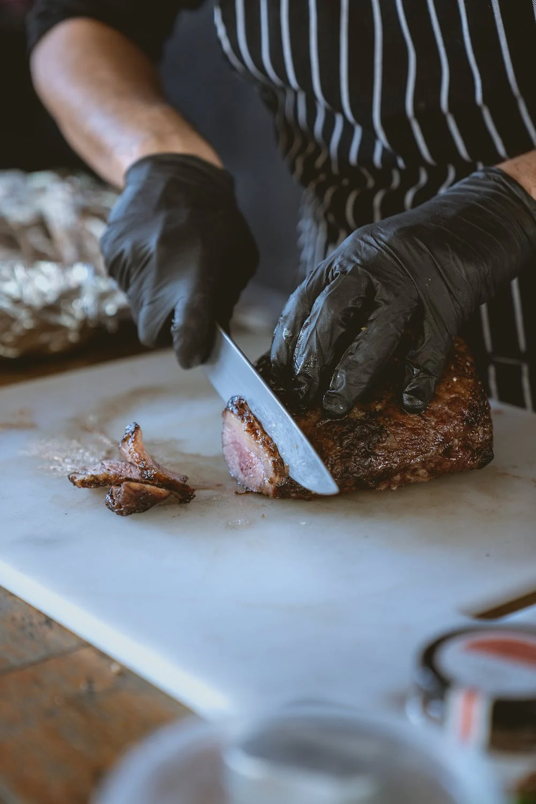

<!DOCTYPE html>
<html>
<head>
    <meta charset="utf-8">
    <title>Mapbox API exercise</title>
    <meta name="viewport" content="initial-scale=1,maximum-scale=1,user-scalable=no">
    <link href="https://api.mapbox.com/mapbox-gl-js/v2.14.1/mapbox-gl.css" rel="stylesheet">
    <script src="https://api.mapbox.com/mapbox-gl-js/v2.14.1/mapbox-gl.js"></script>
    <style>
       * {
            margin: 0;
            padding: 0;
           box-sizing: border-box;
        }
       header {
           text-align: center;
       }
       body {
           background-color: black;
       }
        #map {
            margin: 40px auto;
            height: 800px;
            width: 80%;
            border: double 15px rgba(254, 254, 254, 0.7);
            border-radius: 10px;
        }
        .restaurant-popup {
            font-size: 25px;
            text-decoration: underline;
            padding: 5px;
        }
        div p {
            font-weight: bold;
        }
        .p-popup {
            padding: 4px;
            font-size: 15px;
        }
    </style>
</head>
<body>
<div id="map"></div>


<script src="js/keys.js"></script>
<script src="js/geocoder_utils.js"></script>
<script>

    const restaurants = [
        {
            name: "Bunz",
            longitude: -98.49293,
            latitude: 29.42631,
            food: "Gourmet Burgers",
            ratings: "4.5 stars"


        },
        {
            name: "Domingo Restaurant",
            longitude: -98.491125320,
            latitude: .42487931317373,
            food: "Gourmet Mexican Food",
            ratings: "4.1 stars"

        },
        {
            name: "Pinkertons BBQ",
            longitude: -98.49411883188519,
            latitude: 29.42752041601166,
            food: "Damn Good BBQ",
            ratings: "4.7 stars"

        }
    ]


    mapboxgl.accessToken = MAPBOX_API_KEY
    const map = new mapboxgl.Map({
        container: 'map', // container ID
        style: 'mapbox://styles/mapbox/streets-v12', // style URL
        center: [-74.5, 40], // starting position [lng, lat]
        zoom: 10 // starting zoom
    });


    geocode("San Antonio, TX", MAPBOX_API_KEY)
    .then(coords => {
        console.log(coords)
        const bunzMarker = new mapboxgl.Marker()
            .setLngLat(coords)
            .addTo(map);
        map.setCenter(coords);
        map.setZoom(15)
        const bunzPopUp = new mapboxgl.Popup().setHTML(`
            <h2>Bunz Handcrafted Burgers</h2>
            `)
        bunzMarker.setPopup(bunzPopUp)
    });


    restaurants.forEach((restaurant, index) => {
        if ( index === restaurant.length -1){
            map.setCenter([restaurant.longitude, restaurant.latitude]);
            map.setZoom(11)
        }
        const marker = new mapboxgl.Marker()
        .setLngLat([restaurant.longitude, restaurant.latitude])
            .addTo(map);
        const popup = new mapboxgl.Popup()
            .setHTML(`
                <h2 class="restaurant-popup">${restaurant.name}</h2>
                
                <p class="p-popup">Type of Food: ${restaurant.food}</p>
                <p class="p-popup">Ratings: ${restaurant.ratings}</p>
            `);
        marker.setPopup(popup);

    })

</script>

</body>
</html>